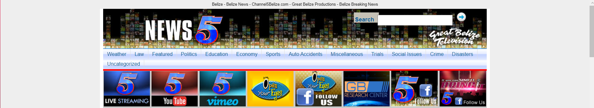
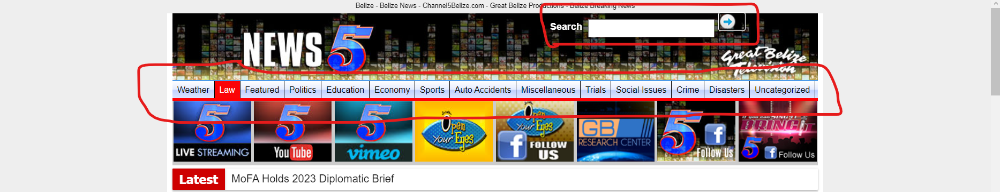
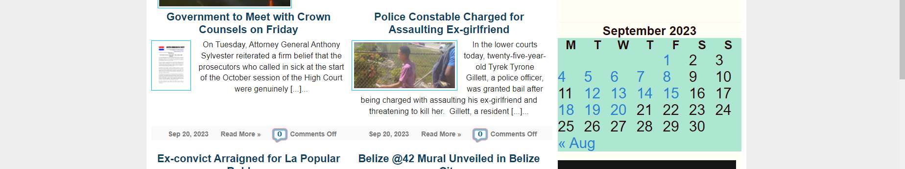

Fixing with CSS
I chose to do the website of Channel 5 news wich is : https://edition.channel5belize.com
The first two edits to the reliabilty of this page dealt with efficency and learnabilty


The fix that I made was the color combinations, padding, and hover of the top nav bar.
-
This change was primarily to fix the efficency of the website. This is because the color combinations of the nav bar at the top, as well as the hover color,
is not adequate because the text is barley visible. This makes it hard for the user to traverse through the website.
The padding of the nav bar was not align well because it left one of the nav bar options and the bottom and it looked uneven and not well designed.
The code used was: ul#navcatlist li a:hover {
text-decoration: none;
background-color: #fb0407;
color: white;
}
ul#navcatlist li a {
display: block;
font: 0.8em Arial, Tahoma, Verdana;
color: #000000;
padding: 6px 7px 5px;
border-right: 1px solid #000;
}
The second change I made was for the search field.
-
The search field was not aligned properly. The label of the field had a box and the color matching again was not on point.
The current design made it look like the search label was a button and I got confused weather to press the button or the arrow.
I fixed the issue by playing with the width of the header, the position and color of the form, and the width of the div that included the search field.
This again affects the learnabilty of this website since the search field does not provide clear and concise labels, icons, and visual cues that users can easily understand.
This makes it hard for the user to learn how to properly search in the website.
The code used was: form#searchform {
position: absolute;
color: #fff;
}
#headerright {
float: right;
width: 400px;
}
#searchform label, #searchformSide label {
color: #ffffff;
font-weight: bold;
font-size: .9em;
padding: 4px 4px 4px 0;
}

The last edit I made was edit the calendar in the website. The calendar plays a cruicial role in this website since if users want
to read news from past days or months, they can easily navigate through the calendar and find it.
-
The change that I did to the calendar was just increase the size of it. I also added some color to it to highlight it a little more
since it needs to be easily visible to the users. This affects the Saftey if the calendar's design is not user-friendly
or intuitive, users might accidentally click on calendar elements that take them to unexpected pages or initiate actions
they did not intend to perform. This can lead to confusion and frustration, impacting the overall user experience
and potentially causing safety concerns.
The code used was: table#wp-calendar {
border-collapse: collapse;
border-spacing: 0;
width: 100%;
color: #26090b;
font-size: x-large;
background-color: #ade6d1;
}
caption, th {
text-align: center;
font-size: 20px;
font-weight: bold;
}